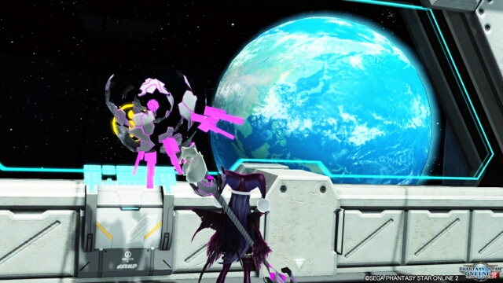
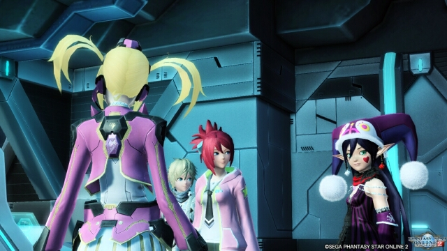

まずはキャラクター紹介から再開しました。そういや1キャラ増えてたよ。本当は無月の人型モードも載せたいんですけどね。というか設定６で全キャラ撮りなおしたくもあり、グリーン撮影ブースが欲しい今日この頃です。
Vita版PSO2に初めてログインしました！ Vitaは持ってたんですが、wi-fi環境がなかったのでこれまでは出来なかったんですよ。まずは操作性に慣れるところから始めねばならぬ。キーボーダーの私的にはこれが一番難関だと思う。やったね、たえちゃん！ これからは残業が長引いても緊急に行けるようになるよ！ うわぁい！(´；ω；`)
かくも地球は青く在り

2016/06/20
上月ちゃん劇場III そして伝説へ…

今度ちょろっとレイアウト変えると言ったな。アレは嘘だ！！ 結構大々的に変わりました。上月ちゃん劇場第三部の開幕です！
まずはおさらいから。このサイトは不定期更新です。ちなみに第一部の更新は9回、第二部の更新は5回でした。少なすぎない？（￢ｘ￢；）
第二部で実装されていた右クリックメニューやおしゃべりアークマは一旦外しました。機を見て戻したいと思ってますが、アークマは解雇する気がします。キャラクター紹介は新しいレイアウトに対応させたら公開します。
あと第三部の目玉として、キャンディボックスシミュレータを制作中です。第二部の裏側で作成してたものの、こちらもレイアウトが古いままなので修正入れたら正式公開します。まだ拙い出来なので順次アップデートはかけていくつもりです。不定期更新ですが！
まずはおさらいから。このサイトは不定期更新です。ちなみに第一部の更新は9回、第二部の更新は5回でした。少なすぎない？（￢ｘ￢；）
第二部で実装されていた右クリックメニューやおしゃべりアークマは一旦外しました。機を見て戻したいと思ってますが、アークマは解雇する気がします。キャラクター紹介は新しいレイアウトに対応させたら公開します。
あと第三部の目玉として、キャンディボックスシミュレータを制作中です。第二部の裏側で作成してたものの、こちらもレイアウトが古いままなので修正入れたら正式公開します。まだ拙い出来なので順次アップデートはかけていくつもりです。不定期更新ですが！
2016/06/13
EP4始めました。

気が付くと2016年でした。丸３カ月未更新だわさ。ちなみに今回新しく機能追加みたいなこともしてません。帰ってきたら１時間くらいPSO2して寝るを繰り返してたら３カ月経ってた。うむ、コワイな。
サモナーは無事75になって極地中（３段階目）です。バッチクエ期間中に極地まで終わらせたい。ボーナス金の出方次第の気もするが…。そんなことよりトリムエッグだよ！ どう見てもPREMIUMなアレだよね・ｘ・
WEBアプリケーション的なこともやりたいけど、環境作るところからだし面倒なのよね。今度ちょろっとレイアウト変えるか、アークマをSOROにするかしたいと思います。（するとは言ってない）
サモナーは無事75になって極地中（３段階目）です。バッチクエ期間中に極地まで終わらせたい。ボーナス金の出方次第の気もするが…。そんなことよりトリムエッグだよ！ どう見てもPREMIUMなアレだよね・ｘ・
WEBアプリケーション的なこともやりたいけど、環境作るところからだし面倒なのよね。今度ちょろっとレイアウト変えるか、アークマをSOROにするかしたいと思います。（するとは言ってない）
2016/02/21
昨日も20才。今日も20才。

プロフィールというかキャラクターページが追加されました。何なんですかね、この隔月ペース更新は……。そしてプロフィールもPC用にしか追加してないという怠慢っぷり！ でもいいの！ やりたいことをやりたいようにやっていくの！
そしてちゃっかり誕生日です。同じ誕生日なのは芸能人なら深田恭子、男性声優なら石田彰、女性声優なら若林直美、キャラクターならクッキーモンスターです。（←テンプレ）いくつになったのと聞かれたら、とりあえず永遠の20才と答えます。17才とか18才だとお酒飲めないしね。さあ、君も永遠の20才教に入るのだ！！
そしてちゃっかり誕生日です。同じ誕生日なのは芸能人なら深田恭子、男性声優なら石田彰、女性声優なら若林直美、キャラクターならクッキーモンスターです。（←テンプレ）いくつになったのと聞かれたら、とりあえず永遠の20才と答えます。17才とか18才だとお酒飲めないしね。さあ、君も永遠の20才教に入るのだ！！
2015/11/02
記事書けと言う話で

レスポンシブ化してみました。記事の一覧表示させるレイアウトが中々決まらず、こんな時期になってしまった。これでスマホでも上月ちゃん劇場が見られるようになりますね。メニューすら無いのだけれど！
次はキャラクターページ埋めたら、pjaxによるページ切り替えしてみたいなぁ。とか考えてます。
あとアークマのセリフも色々追加したり、別に個人的なページを作成したりなど、まだまだやりたいことは色々あります！
とりあえず現在どれだけ忙しいかという参考画像を貼っておきますね。ｘ。
～ シルバーウィーク最終日にて
次はキャラクターページ埋めたら、pjaxによるページ切り替えしてみたいなぁ。とか考えてます。
あとアークマのセリフも色々追加したり、別に個人的なページを作成したりなど、まだまだやりたいことは色々あります！
とりあえず現在どれだけ忙しいかという参考画像を貼っておきますね。ｘ。
～ シルバーウィーク最終日にて
2015/09/20
なーーーつーーーーーーっ！！！

暑い日々が続きます。夏バテ気味な上月ちゃんです。スイパラいきたい・ｘ・
そしてメンテ明けから報酬期間のはず。何も準備してないどころか、期間限定であと金200個集めないと……それで★13拾えたら万々歳だけどもね！
あとEP3の5章終盤にいい感じのSSスポットがあったので時間がある時にでも撮影に行きたいです。時間が…ない…ぐぬぬ…。
とりあえず今日でTeの極地が終わる予定なので、きっと報酬期間はずっとBrで極地やってます。
そしてメンテ明けから報酬期間のはず。何も準備してないどころか、期間限定であと金200個集めないと……それで★13拾えたら万々歳だけどもね！
あとEP3の5章終盤にいい感じのSSスポットがあったので時間がある時にでも撮影に行きたいです。時間が…ない…ぐぬぬ…。
とりあえず今日でTeの極地が終わる予定なので、きっと報酬期間はずっとBrで極地やってます。
2015/07/29
上月ちゃん劇場リターンズ！

ふとWEBサイトを作りたくなる時ってありますよね！ というわけで数カ月ほどMMOで吟遊詩人的なことをやった後に戻って参りました、PSO2。４月から生活環境も変わってMMOやってる場合じゃない！ってなったわけですが、それでも忙しくて７月になるまでほとんど動けていませんでした……。
今回再開するにあたり、新たに見聞きした技術要素を取り入れたわけですがお気づきでしょうか！ あの黒い悪魔ことアークマがbot化してる！ とか、右クリックがリンクメニューになってる！ とか、そんなこんな。まあレイアウトはほとんど以前のままですけどね。中には計画中で未実装の機能もあるので、まだまだサイト作成は終わらんぜよ！
ところで私の★１３も未実装なのよな(´・ω・`)
今回再開するにあたり、新たに見聞きした技術要素を取り入れたわけですがお気づきでしょうか！ あの黒い悪魔ことアークマがbot化してる！ とか、右クリックがリンクメニューになってる！ とか、そんなこんな。まあレイアウトはほとんど以前のままですけどね。中には計画中で未実装の機能もあるので、まだまだサイト作成は終わらんぜよ！
ところで私の★１３も未実装なのよな(´・ω・`)
2015/07/22